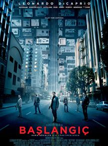
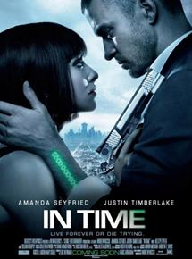
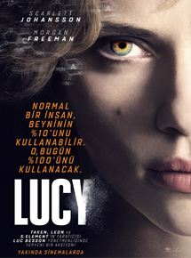

Vizyon tarihi: 7 Kasım 2014 (2s 49dk)
Yönetmen: Christopher Nolan
Oyuncular: Matthew McConaughey, Anne Hathaway, Michael Caine
Tür: Bilimkurgu, Dram
Ülke: ABD
Özet ve Detaylar
"Yıldızlararası'nda, teknik bilgisi ve becerisi yüksek olan Cooper, geniş mısır tarlalarında çiftçilik yaparak
geçinmektedir; amacı iki çocuğuna güvenli bir hayat sunmaktır. Onlarla yaşayan Büyükbaba Donald çocuklara göz
kulak olurken, henüz 10 yaşındaki kızı Murph şaşırtıcı bir zekaya sahiptir. Geçmişte bıraktığı biliminsanı
kariyerini özleyen Cooper'un karşısına bir gün beklenmedik bir teklif çıkar ve ailesinin, dahası insanlığın
güvenliği için zorlu bir karar alması gerekir...
Christopher Nolan'ın, Jonathan Nolan ile kaleme aldığı ve yönetmenliğini sırtladığı filmin yıldız oyunculardan
oluşan oyuncu kadrosunda Matthew McConaughey, Anne Hathaway, Jessica Chastain, Matt Damon, Bill Irwin, John
Lithgow ve Michael Caine gibi isimler yer alıyor. Bilimkurgunun yanı sıra dramatik öğeler de içeren filmin
senaryosu Fizikçi Kip S. Thorne'nun evrendeki 'Solucan Delikleri' teorisinden ilham alıyor.
Başlangıç

Vizyon tarihi:30 Temmuz 2010 (2s 28dk)
Yönetmen: Christopher Nolan
Oyuncular: Leonardo DiCaprio, Marion Cotillard, Ellen Page
Tür: Bilimkurgu, Gerilim
Ülke: Türkiye
Özet ve Detaylar
Başlangıç, doğaüstü ve büyülü gerçekçi tonları, bilim kurgu ve fantazmatik sinema estetiği ile harmanlayan
ilginç senaryosuyla, Leonardo DiCaprio'nun üst düzey performans sergilediği değişik bir film. Bu yapımda
sanatçı, çok yetenekli bir hırsız olan "Dom Cobb " ile karşımızda. Uzmanlık alanı, zihnin en karanlık ve
savunmasız olduğu rüya görme anında, bilinçaltının derinliklerindeki değerli sırları çekip çıkarmak ve onları
çalmaktır. Cobb'un bu nadir insanlarda görülebilecek yeteneği, bu ender rastgelinebilecek mahareti, onu
kurumsal casusluğun tehlikeli yeni dünyasında aranan bir oyuncu yapmıştır. Aynı zamanda bu durum onu
uluslararası bir kaçak yapmış ve sevdiği herşeye malolmuştur. Cobb'a içinde bulunduğu durumdan kurtulmasını
sağlayacak bir fırsat sunulur. Ona hayatını geri verebilecek son bir iş; tabi eğer imkansız ?başlangıç'ı
tamamlayabilirse. Mükemmel soygun yerine, Cobb ve takımındaki profesyoneller bu sefer tam tersini yapmak
zorundadır; görevleri bir fikri çalmak değil onu yerleştirmektir. Eğer başarırlarsa, mükemmel suç bu
olacaktır.
Zamana Karşı

Vizyon tarihi: 28 Ekim 2011 (1s 41dk)
Yönetmen: Andrew Niccol
Oyuncular: Amanda Seyfried, Justin Timberlake, Cillian Murphy
Tür: Bilimkurgu, Gerilim
Ülke: ABD
Özet ve Detaylar
25 yaşına gelen insanların, yaşlanmayı durdurmak için var güçleriyle çalışmak zorunda olduğu bir gelecekte
geçen filmde, zaman gerçekten para ve güç demek.
Will Salas (Justin Timberlake), bir hata sonucu cinayetten hüküm giyer ve hapishaneden kurtulmak için tek
şansı gerçek yüzünü gördüğü sistemi çökertmektir. Zira zamanın rahatlıkla satın alınabildiği bu sistemde
zenginler sonsuza kadar genç kalarak yaşarken fakir ve güçsüz olan ise ölerek, elenir. Üstelik kendi
yaşayamadıkları yıllar başkalarının hayatlarına eklenir. Güçs üz olanlar sadece bir gün daha hayatta
kalabilmek için 'zaman' dilenir, ödünç alır hatta bazen zamanı çalar. Will Salas ise bütün bu yozlaşmış
sisteme karşı baş kaldırır...
Başrollerini son dönemde müzik çalışmalarına ara veren ve sinemaya yönelen Justin Timberlake ile yeni Scarlett
Johansson olarak anılan Amanda Seyfried'in paylaştığı filmin yardımcı oyuncu kadrosunda ise Olivia Wilde, Alex
Pettyfer, Cillian Murphy gibi isimler var.
Daha önce Gattaca, S1m0ne ve Lord of War'ı hem yazıp hem yöneten, The Truman Show ve The Terminal gibi
filmlerin senaryosunu kaleme alan Andrew Niccol'un son projesi büyük beklenti yaratıyor...
Lucy

Vizyon tarihi: 8 Ağustos 2014 (1s 29dk)
Yönetmen: Luc Besson
Oyuncular: Scarlett Johansson, Morgan Freeman, Min-sik Choi
Tür: Bilimkurgu, Aksiyon
Ülke: Fransa
Özet ve Detaylar
Tayvan'ın başkenti Taipei'nin suça batmış yeraltı dünyası sokak çeteleri, mafya ve işbirlikçi polisler
tarafından yönetilirken en aktif ticaret, uyuşturucu ağı üzerinden yürütülür. Eğlenmeyi seven, sıradan bir
genç kadın olan Lucy, birkaç gece beraber takıldığı Richard yüzünden kendisini bir anda en azılı uyuşturucu
şebekelerinin birinin içine düşmüş bulur. Vücudunun içine kurye olması için yerleştirilen yeni bir tür
sentetik uyuşturucu, beklenmedik bir şekilde Lucy'nin vücuduna nüfuz edip kanına karışmaya başlayınca mucizevi
bir durumla yüzleşir. Lucy'in damarlarında dolaşan kimyasallar, ona insanüstü yetenekler kazandırmıştır! Artık
akıl okuma, telekinezi ve acıyı hissetmeme gibi güçlere sahip olan genç kadın beyinin tüm algı kapılarını
sonuna kadar açacaktır... Ünlü Fransız sinemacı Luc Besson'un senaryosunu yazıp yönetmenliğini yaptığı filmin
başrolünde Scarlett Johansson bulunuyor.